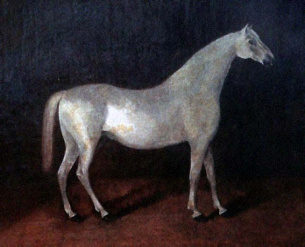
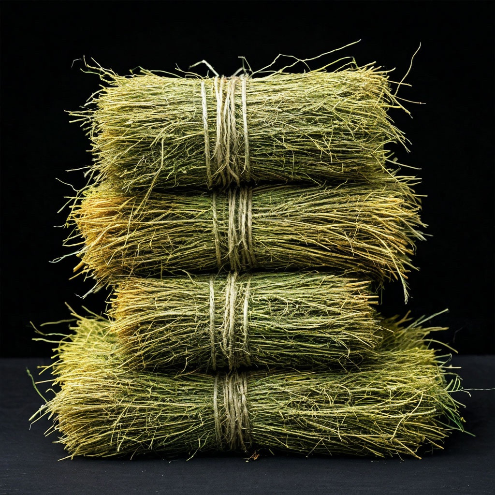
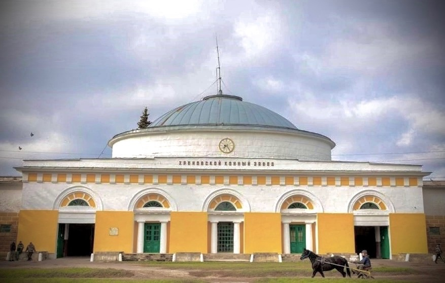

Ласточка
Орловская рысистая
История породы
Орловская рысистая порода (орловский рысак) – старейшая и ценнейшая культурная порода лошадей, выведенная в России. Названа так по имени создателя графа Орлова-Чесменского: талантливого полководца и соратника Екатерины II, а после отставки ещё и конезаводчика. История орловских рысаков началась в 1776 году, когда граф Алексей Орлов ввез в Россию арабского жеребца Сметанку. Он был приобретён за огромную сумму – 60 тысяч серебром у турецкого султана после победы, одержанной в войне с Турцией.
Лучший сын Сметанки – Полкан 1 – был скрещен с кобылой голландской породы (лошади которой часто умели рысить), и все получилось – потомок получился крупный, сильный, красивый, в яблоки, с прекрасной рысью. Его и принято считать первой лошадью орловской рысистой породы. Лошадку назвали Барс 1. От двух его сыновей - серого Лебедя и вороного Любезного и ведут начало современные орловские рысаки.
Наша Ласточка

Ласточка рождена в 2013 году, является помесью Орловской рысистой и чистокровной верховой. Масть – серая. Очень резвая лошадка с добрым характером!
Особенности породы

Орлов собирался вывести крупную, эффектную, но в то же время выносливую, универсальную породу – под седло, и в упряжь, и в плуг. Что называется: и в подводу, и под воеводу. Такими уникальными качествами и по сей день обладает только орловская рысистая. Главным требованиям к этим лошадям была резвая, четкая рысь, поскольку бегущая рысью лошадь долго не устает и мало трясет экипаж.
Самой важной чертой орловских рысаков является генетически закреплённая способность к резвой рыси. Эта особенность унаследована от родоначальника породы — арабского жеребца Сметанки, у которого была дополнительная пара рёбер, что удлиняло корпус и давало способность к правильной рыси. Это одна из самых крупных среди упряжных пород в мире. Кони эти, помимо всего прочего, еще и очень выносливые.
Описание породы

Современный орловский рысак – крупная гармонично сложенная лошадь крепкой и сухой конституции, обладающая выраженным упряжным форматом и нарядным экстерьером.
Рост в холке – 157-170 см. Рост кобыл, в среднем, 161 см, жеребцов – 162 см. Голова сухая, небольшого размера, широкая во лбу. Шея – высокая, с изгибом. Широкий и массивный круп, прямая, длинная, мускулистая спина, прочный костяк.
Масть орловская лошадь обычно имеет серую. Это может быть светло-серый окрас, красно-серый, темно-серый, серый в яблоках и т. д. Но иногда рождаются жеребята и другой масти — вороной, буланой, чалой и пр. Недостатком это не считается. Отличные от серой масти достались этим коням в основном в наследство от первых кобыл-прародительниц.
Существует 3 типа экстерьера орловских лошадей: сухой (легкий), промежуточный и массивный (напоминающий тяжеловоза).
Характер

Одним из безусловных преимуществ орловского рысака является спокойный, покладистый характер. Эти кони прослыли преданными и смелыми товарищами своих хозяев. Но, несмотря на спокойный характер, лошади орловской породы считаются очень энергичными. Лениться, как представители некоторых других пород, привычки они совершенно не имеют. Спокойствие этих коней хорошо известно многим заводчикам. Однако иногда эти кони все же способны проявлять некоторую строптивость. Но случается это не особенно часто.
Рацион питания породы
Наиболее полноценным для племенных кобыл является пастбищный корм, включающий примерно 30% бобовых и 70% злаковых трав. В дополнение к нему дают утром и в обед по 2 - 3 кг концентратов.
Основные показатели достаточности и полноценности кормления: состояние здоровья кобыл, нормальная упитанность, блеск их волосяного покрова.
В стойловый период в их рационы, кроме основных кормов, которыми являются сено и овес, желательно включать 1 - 1,5 кг пшеничных отрубей и до 0,3 - 0,5 кг взаимозаменяемых периодически других концентратов (льняной или подсолнечниковый жмых или шрот и др.).
На долю концентратов в рационе кобыл должно приходиться 30 - 40% (по общей питательности). В сутки кобылам дают его по 10 - 12 кг. Если сено невысокого качества, то в рацион следует включать 1 - 1,5 кг травяной муки. В последнее время получают распространение комбикорма и премиксы, содержащие набор витаминов, макро- и микроэлементов и белков.
Суточная потребность в поваренной соли колеблется от 30 до 50 г. Вместо нее можно использовать соль-лизунец.
При кормлении жеребцов-производителей в предслучной и случной периоды для жеребцов составляют повышенные по энергетической, белковой, минеральной и витаминной питательности рационы. На долю концентратов в них должно приходиться 50 - 65%, на долю грубых кормов 40 - 30%, на долю сочных 10 - 5% (по питательности).
В рационы жеребцов-производителей наряду с овсом включают пшеничные отруби (1 - 1,5 кг), ячмень, просо, кукурузу, льняной или подсолнечниковый жмых или шрот, мелассу, горох или бобы (0,4 - 0,6 кг), периодически заменяя один корм другим.
В кашу с распаренным овсом и отрубями добавляют в виде отвара льняное семя (по 100 г на жеребца в сутки).
По окончании случного сезона жеребцов кормят по сниженным нормам. В пастбищный период около 50% питательности рациона приходится на долю зеленой травы. Недокорм жеребцов-производителей, приводящий к их истощению, и перекорм, вызывающий ожирение, отрицательно отражаются на их общем состоянии и воспроизводительной функции.
Концентраты жеребцам дают обычно 3 раза в сутки, а сено - 4 раза, причем на ночь больше, чем в дневное время.
Тренинг для данной породы

что-то будет написано
Дисциплины конного спорта

Основная сфера использования – ипподромные испытания (бега). Помимо этого, орловцы широко используются в массовом конном спорте, троечной езде, драйвинге, как досуговая и рабочая лошадь. Орловская рысистая – абсолютно универсальная порода, так как именно это свойство было одним из ключевых при ее создании. Уже тогда лошади могли резво бежать длинные дистанции, что делало их абсолютно незаменимыми при передвижении по бескрайним российским просторам. Особо любили орловских рысаков извозчики, ценившие их за красоту и стать и за возможность прокатить седока «с ветерком»
Знаменитые представители породы
что-то будет написано
Племенные хозяйства и паспорт
Порода имеет единую Племенную книгу, в которой регистрируются орловские рысаки, рожденные как в нашей стране, так и за ее пределами. Книга закрыта для других пород (орловская рысистая порода разводится «в чистоте», скрещивание с другими породами, в том числе рысистыми, не допускается). Держателем книги и оригинатором является ФГБНУ «ВНИИ коневодства».
Хреновской конный завод – родина орловского рысака – старейший конный завод России. Основан 24 октября 1776 года графом Алексеем Григорьевичем Орловым-Чесменским. Расположен на юго-востоке Воронежской области. Завод обладает уникальным коневодческим комплексом, построенным по проекту знаменитого русского зодчего Д.И.Жилярди.
В Хреновском конном заводе выведены орловская рысистая и орловская верховая породы лошадей.